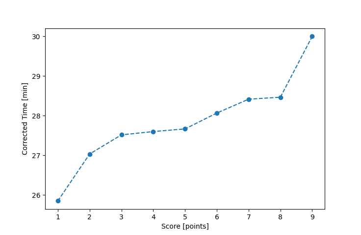

| Wind: | 2-3 (BFT) |
|---|---|
| RC: | Barry_OJim_S |
| Date: | June 06, 2021 |
| Notes: | M2 Starboard Rounding |
| Rank / Score | Name | Boat | Input Time [mm:ss] | Input Offset [mm:ss] | Race Time [mm:ss] | Race Time [s] | Handicap | Corrected Time [s] | Corrected Time [mm:ss] |
|---|---|---|---|---|---|---|---|---|---|
| 1.0 | Mike_F | SF | 25:57 | 00:00 | 25:57 | 1557 | 1.00400 | 1551 | 25:51 |
| 2.0 | Lewis_V | BCN | 23:31 | 00:00 | 23:31 | 1411 | 0.87000 | 1622 | 27:02 |
| 3.0 | Nedra_F | SF | 27:38 | 00:00 | 27:38 | 1658 | 1.00400 | 1651 | 27:31 |
| 4.0 | Rod_H | LASEM | 26:51 | 00:00 | 26:51 | 1611 | 0.97300 | 1656 | 27:36 |
| 5.0 | Ian_O | SF | 27:47 | 00:00 | 27:47 | 1667 | 1.00400 | 1660 | 27:40 |
| 6.0 | Matt_L | DLPSR | 30:29 | 00:00 | 30:29 | 1829 | 1.08600 | 1684 | 28:04 |
| 7.0 | Bill_P | SF | 28:32 | 00:00 | 28:32 | 1712 | 1.00400 | 1705 | 28:25 |
| 8.0 | David_Bu | SF | 28:35 | 00:00 | 28:35 | 1715 | 1.00400 | 1708 | 28:28 |
| 9.0 | Chris_E | SF | 30:07 | 00:00 | 30:07 | 1807 | 1.00400 | 1800 | 30:00 |

Application Notes:
All race results are unofficial
View source code at https://github.com/cessnao3/portsmouthracecalc/